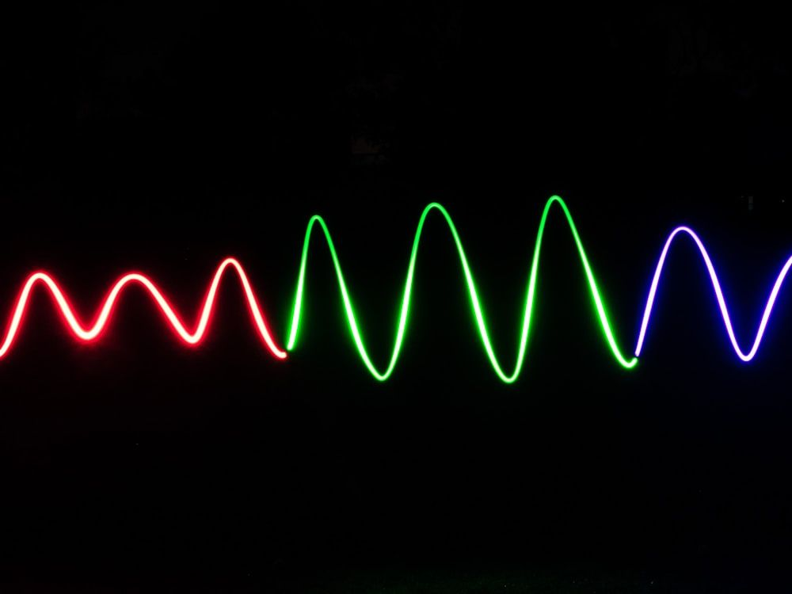
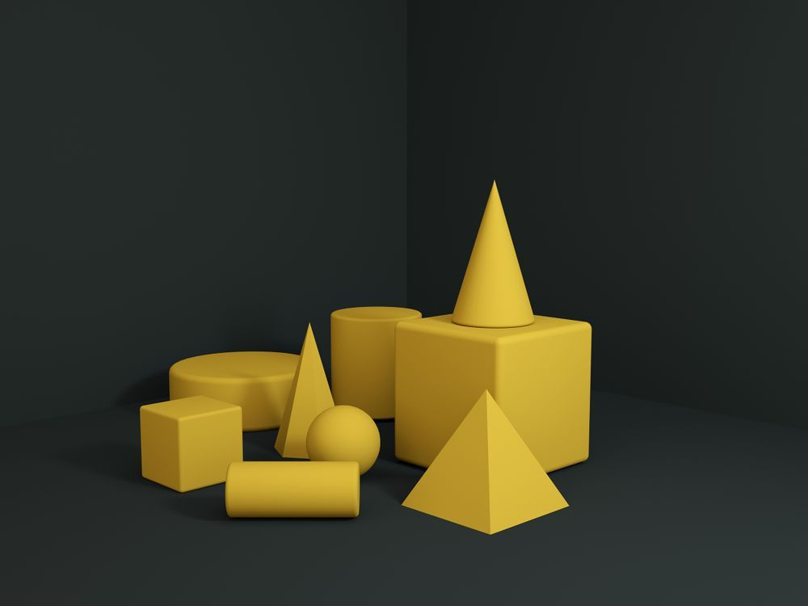
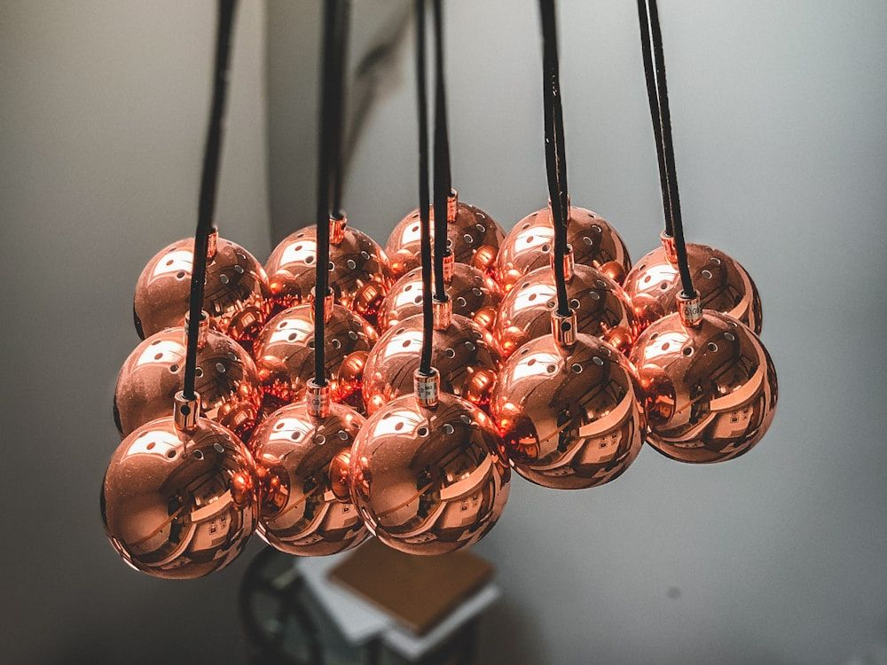
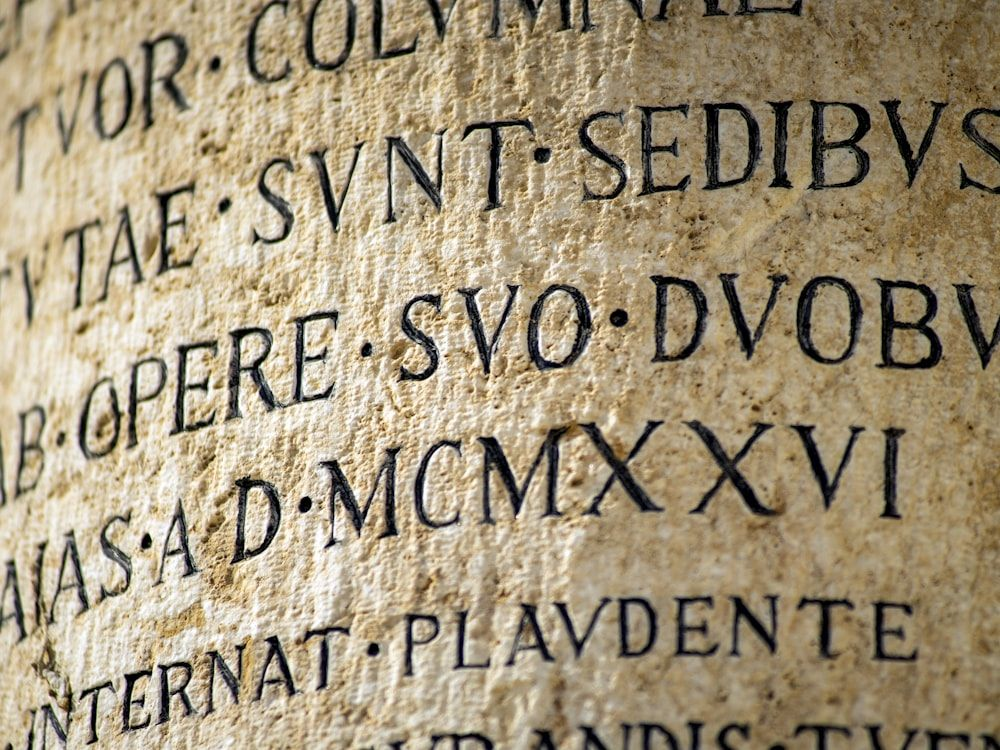
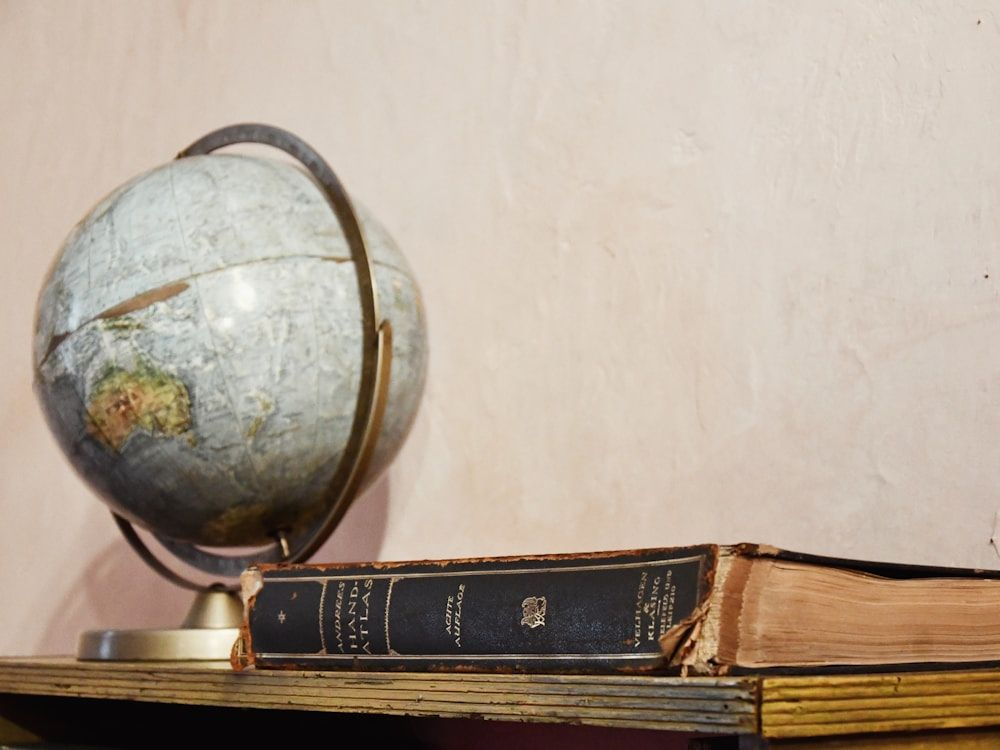

12
Topics
10+
Weekly students
2022
Tutoring since
1:1
Every session
The Maxematics Difference.
- ◆ Every program tailored to the student
- ◆ Custom worksheets & practice exams
- ◆ Virtual, or in a Tampa learning space
- ◆ Study & time-management skills
- ◆ Summer refreshers & final-exam prep
- ◆ SAT/ACT/Desmos support

Meet “The Max” in Maxematics.
“If you think of something as ‘hard,’ it will be. It doesn’t have to be that way.”
Max started tutoring with the idea that academic success is found at the intersection of preparation and attitude. While subject mastery is the obvious goal, Max aims to do that while also inspiring a shift in thinking that makes learning fun.
Beyond tutoring, Max is a Biomedical-STEM student, researcher, rower, escape room aficionado, foodie, community contributor and campus leader.
Anne Frank Humanitarian Award
Department Awards — Math, Science, History
Cum Laude Society
Tampa Prep Head’s List
Writing Center Director & Tutor
AP Scholar with Distinction
HOBY Youth Leadership Ambassador
Best Overall Research — HC STEM Fair
Varsity Rowing Captain
Reddy Lab, Engineering/Research Assistant, USF Morsani College of Medicine
NJ State Police Crime Lab Intern, Hamilton NJ
Pie & Pi — Club Founder & President, Content Creator
One Tutor, Many Topics.





What People Are Saying.
Simple, Tailored Sessions.
| Session | Rate |
|---|---|
| 30 minutes | $25 |
| 60 minutes | $40 |
| 90 minutes | $60 |
Zelle, check, or cash accepted.
Virtual session checklist
- Tablet (preferred) or computer with internet
- Access to Zoom
- Paper & pencil
- Helpful, not required: Apple Pencil

The Gen. H Norman Schwarzkopf Scholarship.
Max's grandfather spent his life in service — to his country, and to the young men and women who served alongside him. What fewer people know is that he was also an educator, teaching calculus and mechanics at West Point. The scholarship exists in his memory, honoring the value he placed on educating the next generation.
A full scholastic year of tutoring is awarded to one student each year, in September.
"You can't help someone else up a hill without getting a little closer to the top yourself."
Full scholarship story & application form open on the next page in the coded build.
Start The Conversation.
Tutoring inquiries, scholarship questions, and scheduling — send a note and Max will reply. Availability is limited, so a little detail about the student and the goal helps.
Affiliations, certifications & recognition